SMH LEARNING · PRODUCTION 1.0
คู่มือผู้ดูแลระบบ (Admin)
จัดการบุคลากร หลักสูตร ข้อสอบ แต้ม และร้านสวัสดิการ
เตรียม→ทำทีละขั้น→ตรวจผล→ใช้งาน
ภาพอธิบายขั้นตอน ไม่ใช่ภาพหน้าจอของระบบปฏิบัติการ
สำหรับผู้ดูแลและ Instructorที่ได้รับหมวด ส่วนร้านสวัสดิการอยู่ในหัวข้อรับคูปอง ภาพจากระบบ Productionชุดทดสอบ ใช้ข้อมูลสมมติ
รุ่น 1.0.0 · ปรับปรุง 10 ตุลาคม 2569
สำหรับผู้เริ่มต้น · ภาพประกอบและข้อมูลสมมติจากชุดทดสอบ
ขั้นตอน / หัวข้อ 1
เข้าระบบและรู้จักสิทธิ์
- เปิดเว็บไซต์ที่ IT แจ้งลงท้าย /login ใช้ admins และรหัสแรก P@ssw0rd112233 เฉพาะการติดตั้งใหม่ เปลี่ยนรหัสอย่างน้อย10ตัวอักษรทันที
- หลังเปลี่ยนรหัสจะเห็นเมนูด้านซ้าย หากจอเล็กให้กดเมนู เลือกหัวข้อที่ต้องการ
- บัญชี admins เป็นบัญชีสงวน คนอื่นแก้ชื่อ บทบาท สถานะ หรือรีเซ็ตให้ไม่ได้ เจ้าของเปลี่ยนรหัสของตัวเองได้
- แอดมินรองสร้างได้หลายคน Instructor ต้องได้รับมอบหมายหมวด ร้านต้องได้รับมอบหมายร้านและอนุมัติ
ภาพรวม Admin: เมนูด้านซ้ายใช้เปลี่ยนงาน ตัวเลขสรุปด้านบนและรายการหลักสูตรอยู่ในเนื้อหาหลักขั้นตอน / หัวข้อ 2
ตั้งชื่อ ภาพ และข้อความหน่วยงาน
- เลือก บริหารระบบ → ตั้งค่าเว็บไซต์ ตรวจแต่ละกลุ่มตั้งค่า
- เปลี่ยนชื่อหน่วยงาน ชื่อเว็บไซต์ ข้อความ Header คำต้อนรับ และข้อมูลติดต่อให้ตรงหน่วยงาน
- อัปโหลดโลโก้/แบนเนอร์หรือเลือกภาพที่ระบบรองรับ ตรวจตัวอย่างก่อนบันทึก
- กดบันทึก แล้วเปิดหน้า login หรือ dashboard ใหม่เพื่อตรวจข้อความจริง ถ้าไม่พบการเปลี่ยนให้รีเฟรชหน้า
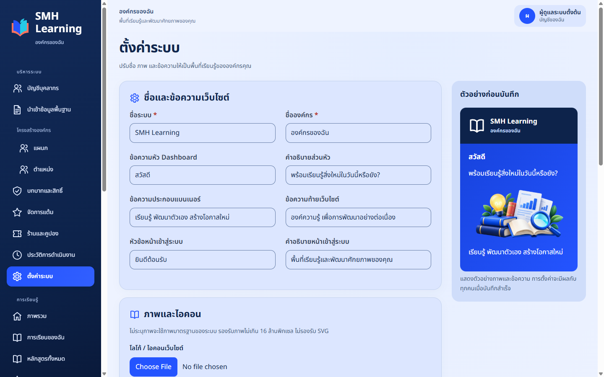
หน้าตั้งค่าองค์กร: ใช้ภาพและข้อความของหน่วยงาน ตรวจตัวอย่างบนหน้าจอก่อนบันทึกตั้งค่าภาพ/ข้อความได้โดยไม่แก้โค้ด ค่าโครงสร้างหลัก เช่น APP_KEY รหัสฐานข้อมูล และ ThaiD ให้ผู้ดูแลเซิร์ฟเวอร์จัดการตามคู่มือติดตั้ง
ขั้นตอน / หัวข้อ 3
นำเข้าข้อมูลพื้นฐานจาก Excel
ดาวน์โหลดเทมเพลต→กรอกข้อมูล→ตรวจไฟล์→ตรวจตัวอย่าง→ยืนยัน
ภาพอธิบายขั้นตอน ไม่ใช่ภาพหน้าจอของระบบปฏิบัติการ
- เลือก นำเข้าข้อมูลพื้นฐาน แล้วเลือกหัวข้อ แผนก/ตำแหน่ง/หมวด/ผู้ใช้/ร้าน
- กดดาวน์โหลดเทมเพลตแต่ละหัวข้อ เปิดไฟล์ใน Excel ใช้ชีต Data กรอกตั้งแต่แถว2 อย่าเปลี่ยนชื่อชีตหรือหัวตาราง
- นำเข้าแผนกและตำแหน่งก่อนผู้ใช้ เพราะผู้ใช้จะอ้างรหัสเหล่านี้ ใช้รหัสหมวดและร้านขององค์กรเอง
- บันทึกเป็น .xlsx ไม่เกิน10MB/1,000แถวต่อไฟล์ ไม่ใส่สูตร/macros/ลิงก์ภายนอก
- เลือกไฟล์ กด ตรวจไฟล์และแสดงตัวอย่าง ตรวจจำนวนเพิ่มใหม่/ข้ามซ้ำทุกครั้ง แล้วกด ยืนยันนำเข้า ภายใน30นาที
ตัวอย่างก่อนนำเข้า: ตรวจจำนวนเพิ่มใหม่ ชื่อและรหัสอ้างอิงก่อนกดยืนยัน ไม่มีการเพิ่มข้อมูลในขั้นตรวจไฟล์ขั้นตอน / หัวข้อ 4
กรอกเลขประจำตัวและจัดการข้อมูลซ้ำ
| คอลัมน์ผู้ใช้ | วิธีกรอก |
|---|
| หมายเลขประจำตัว | ตัวเลข1–15หลัก เก็บเป็น Text เลือกคอลัมน์ใน Excel → Home → Number Format → Text ก่อนพิมพ์ เลข0นำหน้าต้องอยู่ครบ |
| รหัสบุคลากร | รหัสไม่ซ้ำ เช่น EMP001 หากเว้นว่างระบบใช้ username |
| ชื่อ / นามสกุล | แยกคนละคอลัมน์ ใช้ชื่อจริงตอนเปิดบริการ |
| รหัสแผนก / รหัสตำแหน่ง | ใช้รหัสที่นำเข้าแล้ว ไม่ใส่ชื่อแทนรหัส |
| อีเมล / โทรศัพท์ / ประเภทบุคลากร | กรอกตามหัวตาราง เว้นช่องที่ไม่จำเป็นได้ ไม่ใส่สูตร |
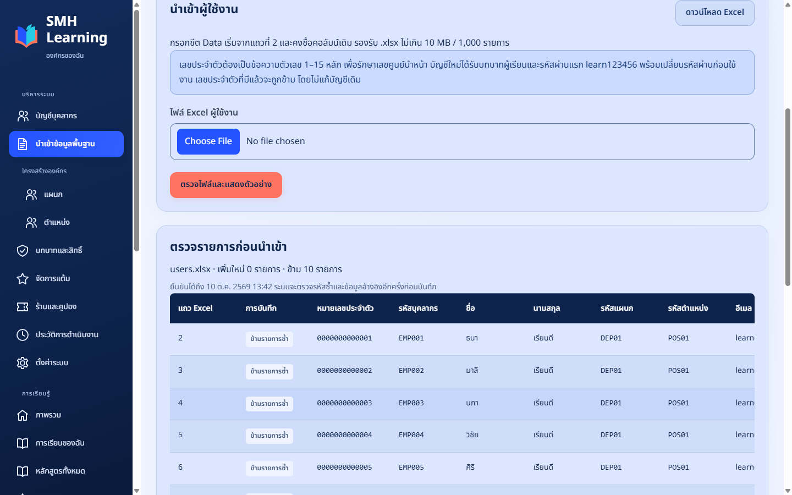
เมื่อนำเข้าเลขประจำตัวเดิมซ้ำ ระบบข้ามรายการเหล่านั้นและไม่เปลี่ยนข้อมูลเดิมเลขประจำตัวซ้ำในไฟล์หรือในฐานข้อมูลจะข้าม ไม่เพิ่มซ้ำ แต่รหัสบุคลากร/อีเมลชนกับคนอื่น หรือรหัสข้อมูลพื้นฐานอื่นซ้ำจะเป็นข้อผิดพลาด ต้องแก้ก่อนนำเข้าทั้งชุด ผู้ใช้ใหม่ทั้งหมดเป็นผู้เรียน รหัสแรก learn123456 และบังคับเปลี่ยน ไม่ได้รับสิทธิ์ Admin/ร้านจาก Excel
ขั้นตอน / หัวข้อ 5
เมื่อ Excel ไม่ผ่าน และแก้บัญชีผู้ใช้
- อ่านแถวและคอลัมน์ที่ระบบแจ้ง เปิด Excel ไปที่แถวนั้น แก้ข้อมูลแล้วบันทึกใหม่
- หากเลือกไฟล์ผิดหัวข้อให้เลือกใหม่ ไม่แก้หัวตารางเพื่อหลอกให้ผ่าน
- บัญชีบุคลากร → ค้นหาคน → แก้ไข เลือกแผนก ตำแหน่ง สถานะและบทบาท แล้วบันทึก
- Admin รีเซ็ตรหัสผู้ใช้อื่นได้ตามสิทธิ์ ระบบให้เปลี่ยนรหัสใหม่อีกครั้ง อย่าใช้การนำเข้าซ้ำเพื่อรีเซ็ต
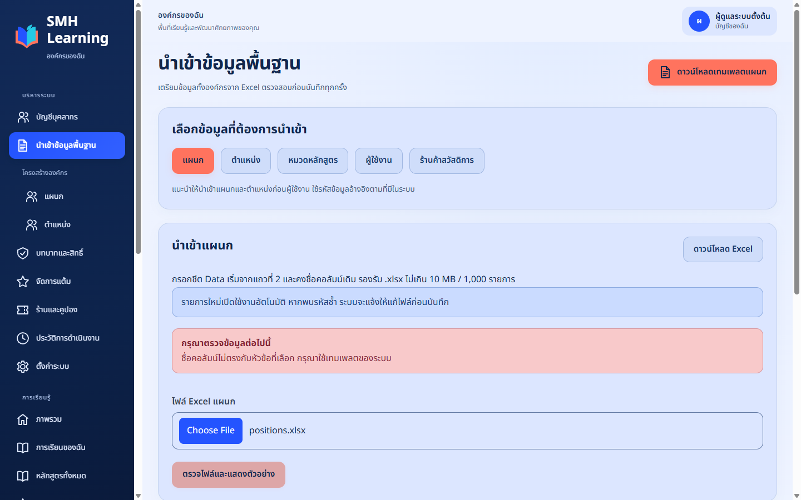
ตัวอย่างข้อผิดพลาด: เทมเพลตไม่ตรงหัวข้อ ต้องใช้ไฟล์ที่ดาวน์โหลดจากหัวข้อเดียวกันขั้นตอน / หัวข้อ 6
มอบหมาย Instructor และตรวจขอบเขต
- เลือกหมวดหลักสูตรที่ต้องการ แล้วกำหนดผู้ใช้ที่เป็น Instructor ให้ควบคุมหมวดนั้น
- ตรวจบทบาทในบัญชีบุคลากรและการมอบหมายหมวดให้ครบ Instructorควบคุมหลักสูตรทั้งหมดในหมวดที่ Adminกำหนด
- ให้ Instructor เข้าระบบด้วยบัญชีของตน ตรวจว่าเห็นเฉพาะหมวดที่มอบหมาย
- แผนก/ตำแหน่งปัจจุบันของคนแก้ได้ แต่รายงานรอบเก่าใช้ข้อมูล ณ สมัครเรียนเพื่อรักษาประวัติ
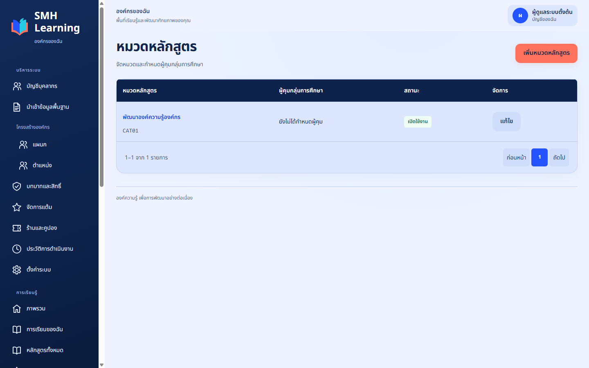
หมวดหลักสูตรและการมอบหมาย Instructor โดย Adminขั้นตอน / หัวข้อ 7
สร้างหลักสูตรและกำหนดจำนวนบท
- เลือก จัดการหลักสูตร → สร้างหลักสูตร กรอกรหัส ชื่อ หมวด และรายละเอียด แล้วบันทึก
- เข้าแก้หลักสูตร เลือกเวอร์ชันร่าง สร้างกลุ่มบท/บทเรียนตามจำนวนที่ต้องการ กำหนดลำดับและบทจำเป็น
- ในแต่ละบทเพิ่มเนื้อหาเป็นวิดีโอ เอกสาร ภาพ บทความ หรือลิงก์ จะไม่แนบเอกสารก็ได้
- วิดีโอเลือกอัปโหลด MP4 หรือ YouTube หรือ URL .mp4โดยตรง ลิงก์ต้องเข้าถึงผ่าน HTTPS และใส่ระยะเวลาเมื่อแบบฟอร์มกำหนด
- แนบ PDF/ภาพ/ลิงก์กับบทนั้นและตั้งจำเป็นตามต้องการ เอกสารของบทแสดงใต้คลิปอัตโนมัติ ไฟล์อัปโหลดสูงสุด100MB
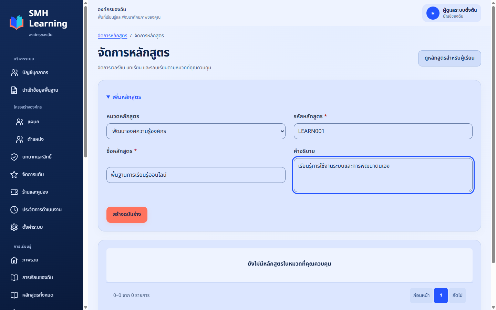
สร้างหลักสูตร: ชื่อ หมวด และรายละเอียดเป็นข้อมูลที่ผู้เรียนเห็นขั้นตอน / หัวข้อ 8
นำเข้า Pretest / Posttest แบบ 4–6 ตัวเลือก
- เข้าแท็บ นำเข้าข้อสอบ กด ดาวน์โหลดเทมเพลตข้อสอบ Excel ใช้ชีต Questions และหัวตารางเดิม
- แต่ละแถวมีรหัสข้อไม่ซ้ำ PRETEST/POSTTEST/BOTH คำถาม ตัวเลือก A–Dจำเป็น E/Fเว้นว่างได้ ถ้ามีFต้องมีE
- คำตอบถูกเป็น A–F หรือ ก–ฉ ได้หนึ่งตัวเลือกเท่านั้น ใส่คะแนนเต็ม หมวดข้อสอบ และคำอธิบายตามเทมเพลต
- เลือกไฟล์ → ตรวจตัวอย่าง → ยืนยันนำเข้า ตรวจเฉลยของ Pretest/Posttest แยกกัน
- หากต้องแทนชุดร่าง ใช้ ล้างข้อสอบเดิมเพื่อนำเข้าใหม่ ยืนยันตามหน้าจอ ใช้ได้เฉพาะเวอร์ชันและชุดสอบร่างที่ไม่เคยมีการสอบ หากเผยแพร่แล้วให้สร้างเวอร์ชันใหม่
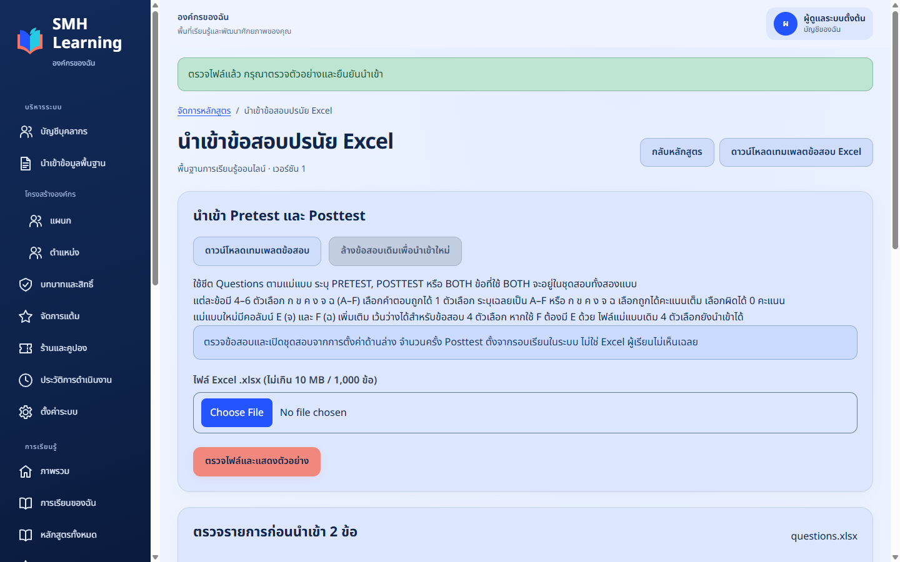
ตรวจคำถาม ตัวเลือกและเฉลยก่อนนำเข้า รองรับไฟล์เดิม4ตัวเลือกและขยายถึง6ตัวเลือกขั้นตอน / หัวข้อ 9
ตั้งชุดสอบ เผยแพร่ และเปิดรอบเรียน
- ตั้งค่า PretestและPosttest เป็นเผยแพร่ ตรวจจำนวนข้อ เวลาสอบ และการสุ่มตามที่ต้องการ
- เผยแพร่เวอร์ชันหลักสูตรเมื่อบท/สื่อ/ชุดสอบครบแล้ว เปิดแท็บ รอบเรียนและผู้เรียน
- กำหนดชื่อรอบ ปีงบประมาณ วันเริ่ม/จบ การสมัครเองหรือมอบหมาย เกณฑ์ดูวิดีโอและจำนวนครั้ง Posttestรวมทั้งหมด
- จำนวนครั้งเริ่มต้น1 หมายถึงสอบได้รวม1ครั้ง ไม่ใช่1ครั้งแล้วทำซ้ำอีก1ครั้ง ปรับได้1–100แต่ไม่ลดต่ำกว่าที่ใช้แล้ว
- เปิดสถานะรอบและมอบหมายผู้เรียนตามต้องการ Pretestบังคับก่อนเรียนแต่ไม่บังคับคะแนน Posttestบังคับอย่างน้อย1ครั้งก่อนจบแต่ไม่บังคับผ่าน
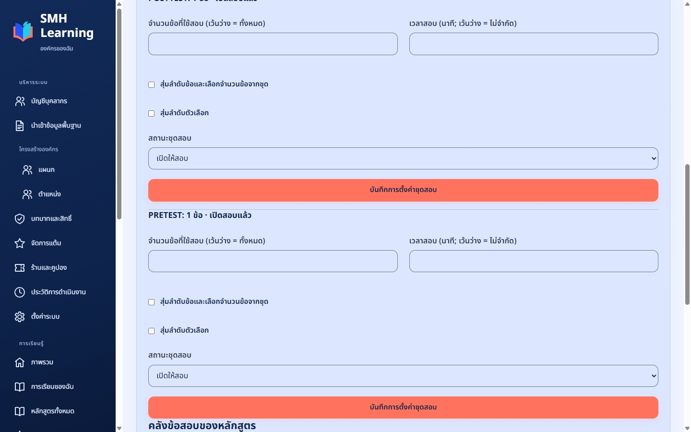
ชุดสอบต้องเผยแพร่ก่อนเปิดรอบ ให้ตรวจเฉลยก่อนมีผู้สอบ เพราะหลังมีประวัติจะถูกจำกัดการแก้ไขขั้นตอน / หัวข้อ 10
ติดตามรายงานและแต้ม
- เลือกรายงานผลการเรียน กรองปี/รอบ/แผนก/สถานะตามสิทธิ์ แล้วตรวจข้อมูลก่อนส่งออก
- เลือกส่งออก XLSX/CSV/PDF ตามแบบฟอร์ม รอ workerสร้างไฟล์จนขึ้นพร้อมดาวน์โหลดแล้วกดดาวน์โหลด
- คะแนนสรุปใช้ Posttestสูงสุด ประวัติแผนก/ตำแหน่งใช้ ณ สมัครเรียน ไม่ย้ายย้อนหลังตามข้อมูลปัจจุบัน
- แต้มอัตโนมัติ:จบ20 สอบผ่านเกณฑ์30 สูงสุด≥90%เพิ่ม10 อย่างละหนึ่งครั้งต่อคนต่อรอบ สอบซ้ำไม่ให้โบนัสเดิมซ้ำ
- กรณีปรับแต้มให้ค้นหาคน ระบุจำนวนและเหตุผล ตรวจยอดก่อนยืนยัน ระบบเก็บ Ledger/Audit ไม่แก้หรือลบรายการเดิม
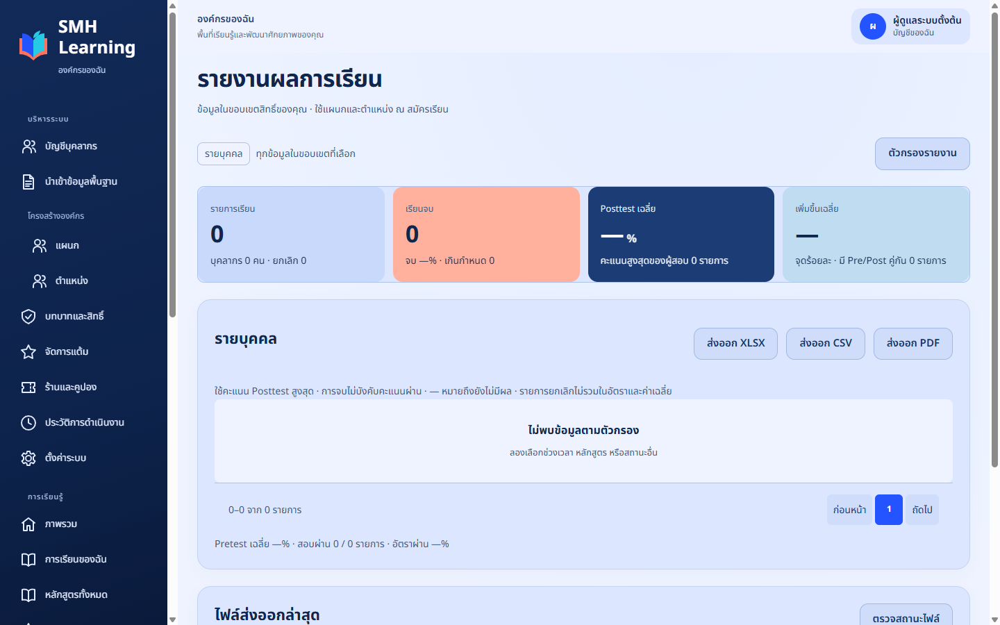
รายงานตามขอบเขตสิทธิ์และเงื่อนไขที่เลือกขั้นตอน / หัวข้อ 11
อนุมัติร้านและตั้งรางวัลคูปอง
- นำเข้าร้านหรือสร้างร้านใหม่ ร้านใหม่อยู่สถานะรออนุมัติ กำหนดผู้ใช้ที่ปฏิบัติงานร้าน
- Adminตรวจข้อมูลและอนุมัติร้านก่อนเปิดรับคูปอง การนำเข้า Excelไม่เพิ่มสิทธิ์ร้านให้อัตโนมัติ
- สร้างรางวัล ผูกร้านที่ใช้ได้ ใส่แต้มที่ใช้ มูลค่าส่วนลดและจำนวนคงเหลือ ตรวจหน่วยบาทในหน้าจอ
- ตัวอย่าง500แต้ม=5บาท /1000แต้ม=10บาท /1500แต้ม=20บาท คูปองมีอายุ90วันและใช้เฉพาะร้านที่ระบุ
- หากระงับร้านให้ระบุเหตุผลและตรวจผลกระทบต่อคูปองที่ยังไม่ใช้ในรายงานก่อนแจ้งผู้ใช้
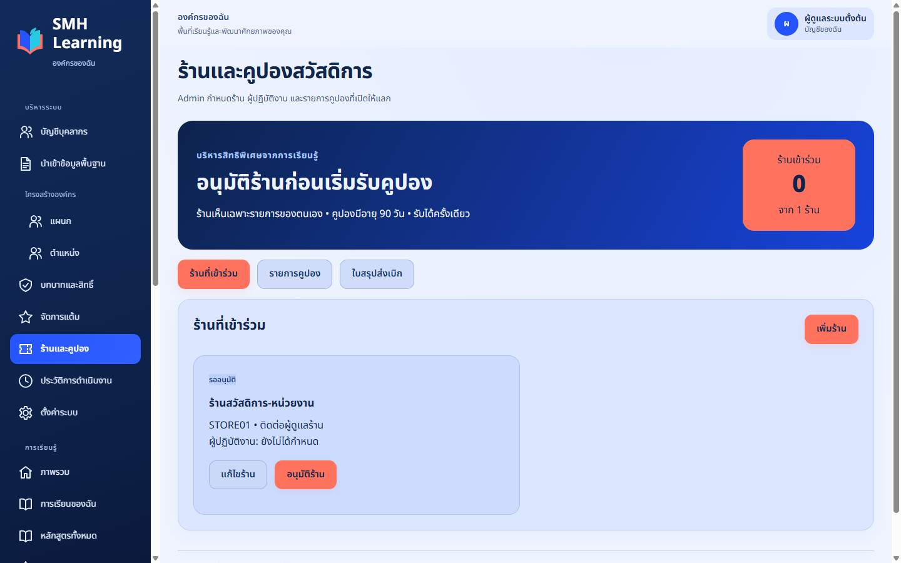
Adminกำหนดร้าน ผู้ปฏิบัติงาน การอนุมัติ และรางวัลคูปองขั้นตอน / หัวข้อ 12
ขั้นตอนร้านรับคูปองและทำใบส่งเบิก
- ผู้ปฏิบัติงานร้านเข้าระบบ เลือก รับคูปองและส่งเบิก แล้วเลือกร้านของตน
- ขอผู้เรียนเปิดบัตรออนไลน์ กดแสดงรหัส นำรหัสมากรอกแล้วกด ตรวจคูปอง
- ตรวจชื่อผู้ถือ ชื่อร้าน มูลค่า วันหมดอายุ หากตรงกดรับคูปองและยืนยัน แล้วจึงให้ส่วนลด ห้ามรับจากภาพบัตรโดยไม่ตรวจระบบ
- เลือกระยะเวลารายงาน ทำเครื่องหมายคูปองที่ยังไม่ส่งเบิก กดสร้างใบสรุป ตรวจยอดก่อนยืนยัน
- ดาวน์โหลด PDFหรือCSVส่งหน่วยงานตามช่องทางที่ตกลง ใบนี้ไม่ใช่การบันทึกจ่ายเงินจริง และรายการถูกกันไม่ให้ส่งเบิกซ้ำ
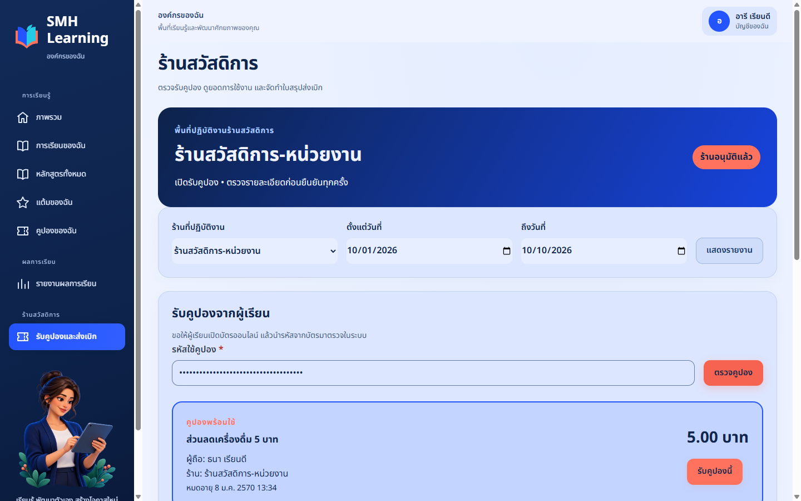
ร้านตรวจคูปองก่อนรับ รหัสในภาพถูกปิดบังเพื่อสาธิต ภาพบัตรอย่างเดียวไม่ยืนยันว่าคูปองยังใช้ได้ขั้นตอน / หัวข้อ 13
ดู Audit และส่งต่อปัญหาให้ IT
- หากสิทธิ์ผิด ให้ตรวจบัญชี บทบาท หมวดและร้านที่มอบหมายก่อนเพิ่มสิทธิ์ใหม่
- ใช้ Auditตรวจผู้ทำรายการ/วันเวลา การนำเข้า ปรับแต้ม หรือรับคูปอง ไม่แชร์ logที่มีข้อมูลส่วนบุคคล
- หากเว็บมี419/502/สื่อไม่เปิด ให้แจ้งITพร้อมเวลาที่เกิดและภาพที่ปิดบังความลับ ไม่เปลี่ยน APP_KEY ไม่ล้างฐานข้อมูล
- ก่อนอัปเดตให้ITสำรองและกู้คืนในระบบแยก ตรวจรายงานและสื่อให้ครบ เจ้าของข้อมูลตัดสินใจการย้อนข้อมูล
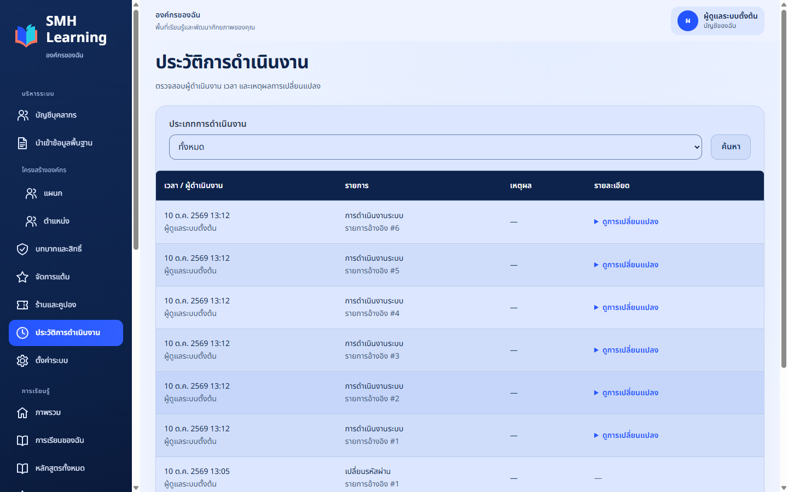
Auditช่วยติดตามผู้ทำรายการและเหตุการณ์ตามสิทธิ์ข้อมูลเอกสารและแหล่งอ้างอิง
จัดทำจากซอร์สรุ่น 1.0.0 และการติดตั้งจริงใน Ubuntu 24.04.5 บน WSL2 วันที่ 10 ตุลาคม 2569 ไม่ใช้ภาพหน้าจอ AlmaLinux หรือ Windows ที่ไม่ได้ถ่ายจริง รูปแบบแผนภาพมีคำกำกับแยกจากภาพหน้าจอ
ใช้ฟอนต์ Sarabun ของ Google Fonts ภายใต้ SIL Open Font License เพราะเครื่องจัดทำไม่มี TH SarabunPSK ไฟล์ใบอนุญาตอยู่ใน assets/fonts/OFL.txt
ดู ผลการทดสอบ และ ซอร์ส GitHub ก่อนติดตั้งจริง